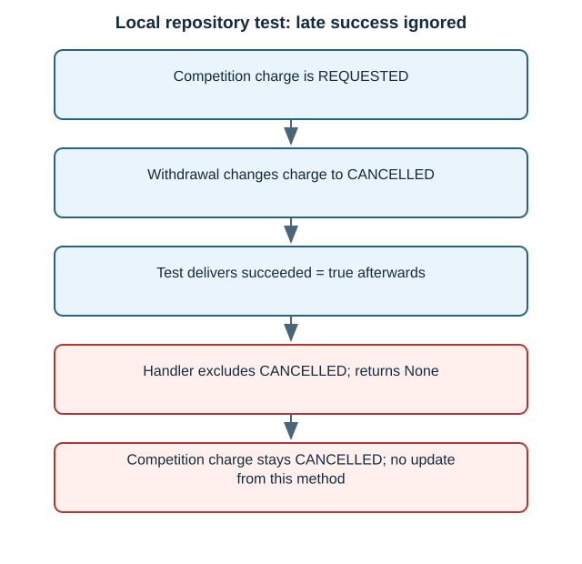
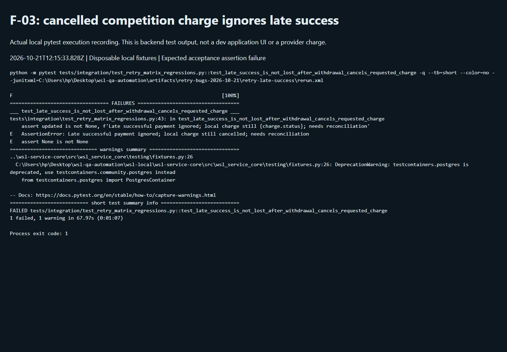

Payment retries · QA-RETRY-03 · Bug report · Tracked in WSL-9743
Competition ignores a successful payment result after withdrawal cancels the charge
21 October 2026 · P2 suggested · Local repository / disposable Postgres
All four bug reports · Full 110-case execution · Download bug report
Jira ticket and complete evidence report
Priority: Medium · Created 21 October 2026 · Download the complete Jira description with logs, test results and acceptance criteria
Postgres failure log · JUnit results · Backend regression source · Backend flow graph · Actual UI flow graph


The repository test failed. The separate live UI run recorded success in history, so full-path payment loss is not established.
Latest rerun: simple result and flow graph
The local charge-result method ignores success after its charge is cancelled. In the separate real UI run, however, payment success appeared in history after withdrawal. That UI run did not reproduce a missing success record.
Open fresh recordings, UI results and flow graphs

Summary
Reproduced: RET-087
record_charge_result returns None for a late successful result when the competition charge has already become CANCELLED, leaving no reconciliation update from this repository method.
Impact: The competition component can lose visibility of a late successful financial outcome. Provider capture, Finance visibility elsewhere, and refund eligibility were not established.
Evidence scope and limits
This test injects a successful result at a repository boundary. It does not hold a live Stripe request, replay the entire webhook/broker chain, prove absence of all Finance records, or authorize a refund.
Priorities are QA suggestions. Jira tracking is linked above. No application fix, refund or shared dev database/policy modification was made during execution.
Recording and execution record
Actual backend test execution recording. This records a fresh pytest run with output streamed into a browser terminal viewer. It is not the dev application UI or a live processor attempt.
Started 2026-10-21T12:15:33.828Z; finished 2026-10-21T12:17:07.658Z. Exit code 1 is expected because the acceptance assertion reproduces the defect.
Recorded output · Fresh rerun XML · Execution metadata
Command and exact captured output
python -m pytest tests/integration/test_retry_matrix_regressions.py::test_late_success_is_not_lost_after_withdrawal_cancels_requested_charge -q --tb=short --color=no --junitxml=C:\Users\hp\Desktop\wsl-qa-automation\artifacts\retry-bugs-2026-10-21\retry-late-success\rerun.xml
F [100%]
================================== FAILURES ===================================
___ test_late_success_is_not_lost_after_withdrawal_cancels_requested_charge ___
tests\integration\test_retry_matrix_regressions.py:43: in test_late_success_is_not_lost_after_withdrawal_cancels_requested_charge
assert updated is not None, f'Late successful payment ignored; local charge still {charge.status}; needs reconciliation'
E AssertionError: Late successful payment ignored; local charge still cancelled; needs reconciliation
E assert None is not None
============================== warnings summary ===============================
..\wsl-service-core\src\wsl_service_core\testing\fixtures.py:26
C:\Users\hp\Desktop\wsl-qa-automation\wsl-local\wsl-service-core\src\wsl_service_core\testing\fixtures.py:26: DeprecationWarning: testcontainers.postgres is deprecated, use testcontainers.community.postgres instead
from testcontainers.postgres import PostgresContainer
-- Docs: https://docs.pytest.org/en/stable/how-to/capture-warnings.html
=========================== short test summary info ===========================
FAILED tests/integration/test_retry_matrix_regressions.py::test_late_success_is_not_lost_after_withdrawal_cancels_requested_charge
1 failed, 1 warning in 67.97s (0:01:07)
Process exit code: 1
Steps to reproduce
- Create a REQUESTED competition charge in disposable Postgres using the real test fixtures.
- Withdraw the entry through the repository so its REQUESTED charge becomes CANCELLED.
- Call the real record_charge_result with succeeded=True and failure_code=None, simulating a late success.
- Read the returned detail and charge state.
- Observe None and CANCELLED instead of a reconciliation outcome; inspect the retained failing acceptance assertion.
Expected versus actual
| Expected | Actual |
|---|---|
| Keep the entrant withdrawn and record or route the late successful financial outcome for reconciliation. | record_charge_result returned None; the competition charge remained CANCELLED. |
Technical investigation
Source: competition/infrastructure/persistence/repositories/events/entries.py:379 — record_charge_result
F-03 — Late success is ignored after competition charge cancellation - Matrix: RET-087. Suggested priority: P2 for reconciliation visibility; financial impact requires provider/Finance correlation. - Source: `wsl-competition-service/src/competition/infrastructure/persistence/repositories/events/entries.py:379`, `record_charge_result`. - Preconditions: a REQUESTED competition charge is cancelled by withdrawal while an external attempt may already have started. - Reproduction: create REQUESTED charge in disposable Postgres, withdraw through the repository, then deliver `succeeded=True` to the real charge-result repository method. - Expected: preserve the terminal entry and record or route the late financial success for reconciliation. - Actual: method returned `None`; the competition charge remained CANCELLED. The acceptance assertion failed. - Cause: update permits OPEN and FAILED charge statuses; CANCELLED is excluded and produces an early return. - Impact limit: the probe targets this component. It did not hold an actual provider request in flight, replay a complete live webhook/broker chain, prove a missing Finance record elsewhere, or establish a refund obligation. - Evidence: `regressions-db.xml`, `test_late_success_is_not_lost_after_withdrawal_cancels_requested_charge`. - Backend direction: maintain an immutable payment outcome or reconciliation record for late success without restoring the withdrawn entrant. Decide refund/manual review policy with Finance and make processing idempotent.
Visual evidence

Acceptance criteria for a fix
- Late success must be idempotently visible for reconciliation without restoring a withdrawn entrant.
- Verify duplicate and out-of-order outcomes, success after release, and provider/Finance correlation.
- Agree refund versus manual-review behavior before making that financial decision automatic.
Raw evidence and matrix traceability
1 original failed native assertions
test_late_success_is_not_lost_after_withdrawal_cancels_requested_charge
db = <sqlalchemy.ext.asyncio.session.AsyncSession object at 0x000001E85F06B6F0>
async def test_late_success_is_not_lost_after_withdrawal_cancels_requested_charge(db):
org=bound_org(db);(entry_id,)=await _entries_charging(db,1);factory=session_factory(db.bind)
async with bound_to(factory,org)() as s,s.begin():
store=SqlEventStore(s);detail=await store.entry_detail(entry_id)
await store.withdraw_entry(entry_id,version=detail.version,write=WithdrawalWrite(stage=list(WithdrawalStage)[0],reason='QA late provider success',decided_by_user_id=None))
updated=await store.record_charge_result(entry_id,succeeded=True,failure_code=None)
charge=await s.scalar(select(m.ChargeRequest).where(m.ChargeRequest.entry_id==entry_id))
> assert updated is not None, f'Late successful payment ignored; local charge still {charge.status}; needs reconciliation'
E AssertionError: Late successful payment ignored; local charge still cancelled; needs reconciliation
E assert None is not None
tests\integration\test_retry_matrix_regressions.py:33: AssertionError